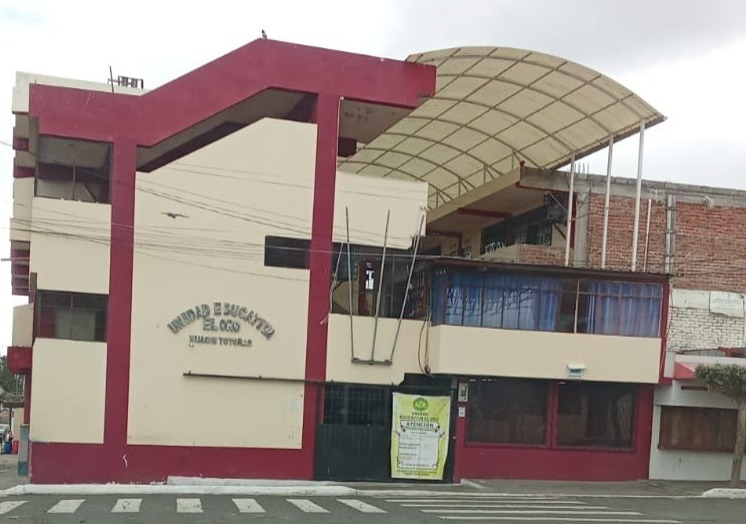

-¿QUE SOMOS Y DONDE ESTAMOS?
La Unidad Educativa "El Oro" ofrece una educación de calidad con un enfoque hacia sus estudiantes y el respeto por el medio ambiente.
Brindamos Educación a los estudiantes de:
- Inicial
- Básica
- Básica Superior
- Bachillerato en Ciencias
Estamos ubicados en Huachi Totoras - Tugurahua
Una foto de la Infraestructura, Año 2025-2026
